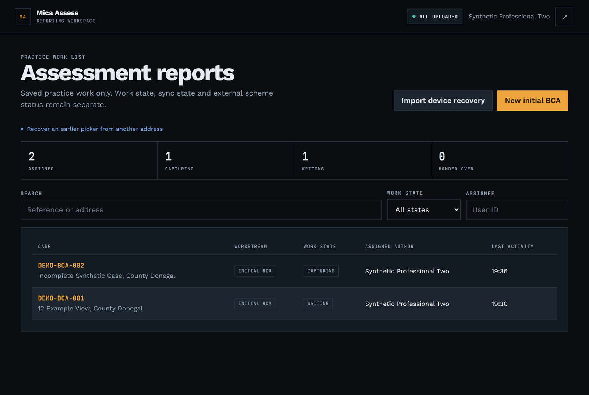
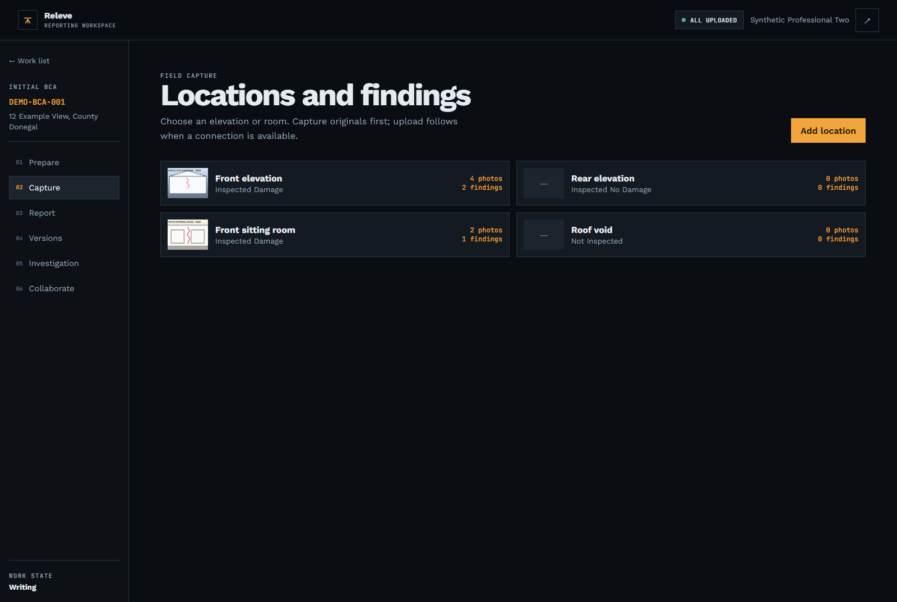
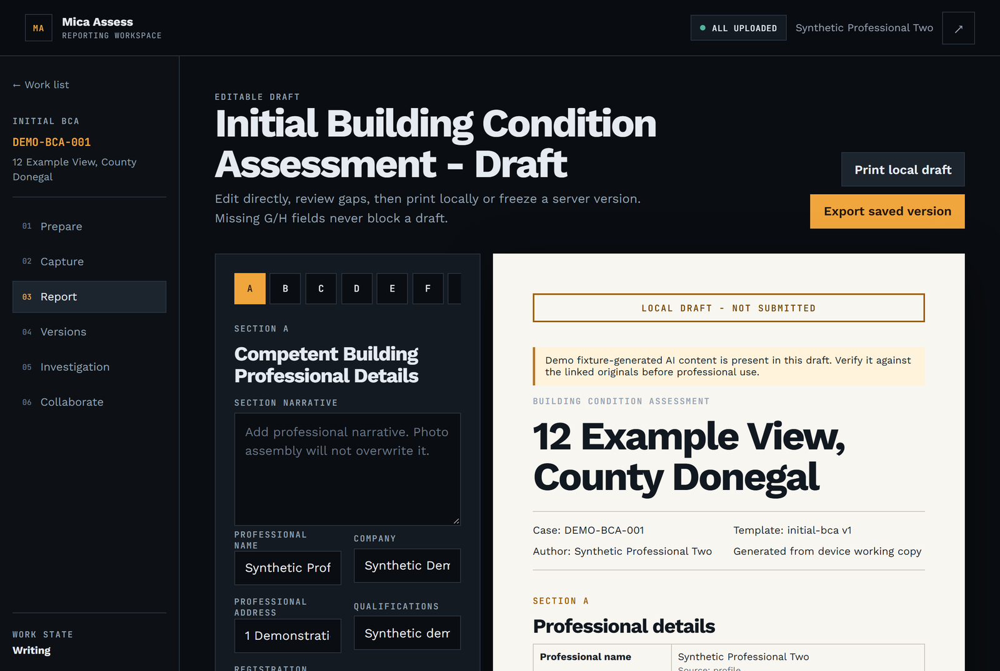
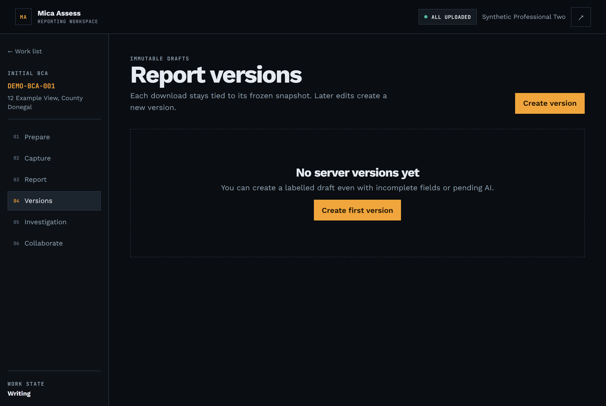

Releve rel-uh-VAY · French for a survey reading.
Releve turns the visit into the report. The draft is written while the assessor is still in the house.




A team led by Dr Chris Brough presented the research to TDs and senators at Leinster House: the number of properties built with defective blocks could rise to 20,000, counting housing estates alone. RTÉ, 23 June 2026
Four sections, one per hand, filled in the order the work happens. The signature at the end signs off all four.
The administrator sees the whole queue; everyone else sees only the cases they are put on.
Photos, voice notes and the homeowner's old paperwork become the draft they correct and sign.
A one-time link to upload what is missing and read the version they were sent. Revocable, and nothing else.
The lab gets an order and sends a document back, recorded on the case. The council gets a package by hand.
0 accounts needed outside the practice
The pin is the clock. Pull it from 08:40 at the practice to 12:55 at the house. Six steps, one case, nothing done twice.
The practice creates the case and hands it to an assessor.
One typical visit.19:00 · home. Nothing left to write.
What the software will and will not do at each step. The clock above is the same morning, hour by hour.
Every field the planning file and the old report can fill, filled, each one labelled with the document it came from.
The tablet saves first and uploads later. No coverage needed at the house, and nothing waits on a signal.
Anything the assessor types stays. A rerun files its own value beside it as an alternative, never over it.
Version 1 is a PDF that never changes, the same file next year. Edit it and you get version 2.
"Year built: 2006, from planning.pdf." "Vertical crack near the corner, from your voice note." No value appears without one.
A blank field takes the suggestion. A field you typed keeps your value. Run it again as often as you like.
The declaration is empty until the assessor fills it. The PDF says "draft" until they say otherwise.
The hard part was never the model. It is holding a legal report structure, a source for every value, and a version that cannot change after it is sent. Swap the model out and that scaffolding is what remains.
404 what a practice not on the case gets
A case is visible to the people put on it and nobody else. A share is one named version, and revoking it closes the file.
Somebody already pays a competent person to write every one of these reports. We are selling a shorter week to the practice that carries the cost of the long one.
They carry the write-up: a morning at the house costs them the rest of the week at a desk.
A frozen, dated, sourced report is what they need to price a house they currently cannot. They never buy it. They ask for it.
Grant schemes end. Assessment does not, and defective concrete block is not the only defect with a standard behind it.
| Part | State |
|---|---|
| Cases, work list, who has what | Built |
| Old documents fill the blank fields, with sources | Built, stand-in AI |
| Photos and voice notes at the house, offline | Built |
| Report editor with live preview | Built |
| Frozen PDF versions | Built |
| Homeowner links, document requests, shares | Built |
| Hand the case to the next engineer, with lab results | Built, synthetic lab |
| Live AI model | Wired, untested |
| Real tablet in a real field | Not yet run |
| Read by a practising I.S. 465 assessor | Not yet |
| Irish-language report and interface | Next |
| Council channel | Next |
| Lab channel | Next |